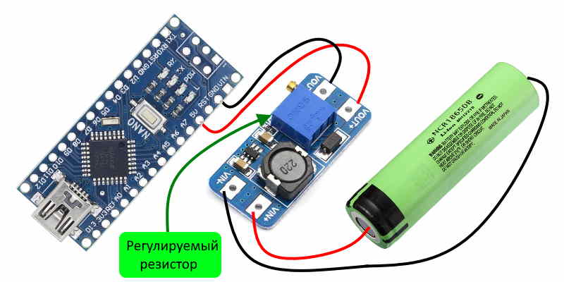
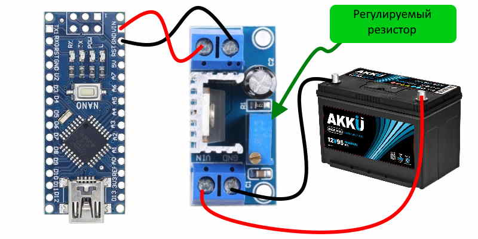

Здесь расположены различные источники питания и схемы их подключения к ардуино и esp.
Здесь расположены различные источники питания и схемы их подключения к ардуино и esp.
Это плата повербанка - отличный способ запитать как ардуино так esp. Данный модуль имеет вход USB и выход как на плате так и разьем, к плате подключается литиевый аккумулятор и все автономное питание устроено.
Давайте подключим повышающий преобразователь MT3608 к ардуино, бывают такие ситуации что литиевая батарея уже есть и заряжается чем либо и нам надо просто запитать от нее ардуино можно отогда обойтись таким DC-DC повышающим преобразователем как на рисунке. Подключаем по схеме но не забудте перед этим настроить с помощью мультиметра выходное напряжение на 5 вольт, оно настраивается с помощью регулируемого резистора. Данный DC-DC повышающий преобразователь имеет хороший запас по мощности особенно если повышает не на много, здесь повышение идет с 3.7 до 5 вольт.
Линейный стабилизатор напряжения lm317 собранный на одноименнной микросхеме очень хорош для подключения различных плат и модулей от автомобиля так как напряжение регулировки составляет от 37 вольт до 1.2вольта. Например вы можете подключить свое устройство как от легкового автомобиля с бортовым напряжением 12 вольт, так и грузового авто с напряжение 24 вольта. Линейный стабилизатор выдает меньше помех в отличии от DC-DC преобразователя но обладает меньшей мощностью и требует охлаждения в виде радиатора при нагрузке.
